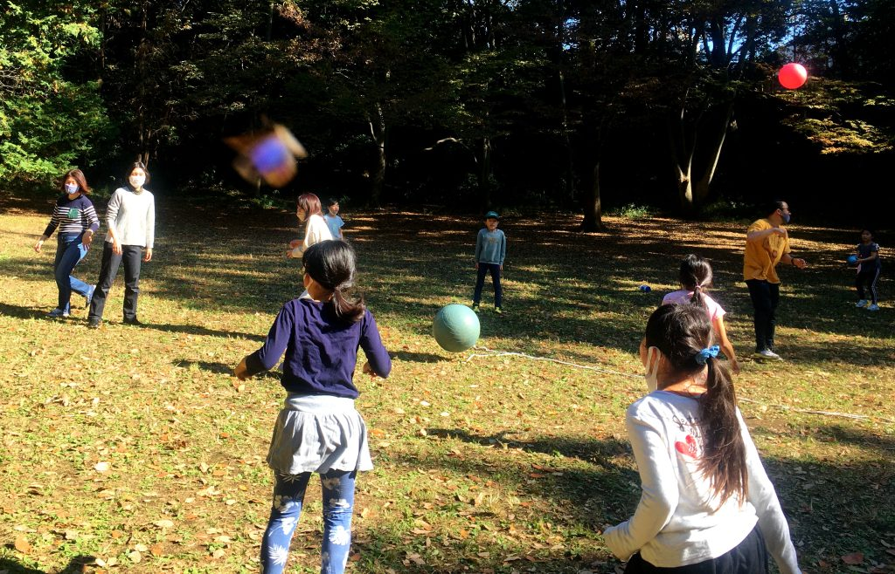
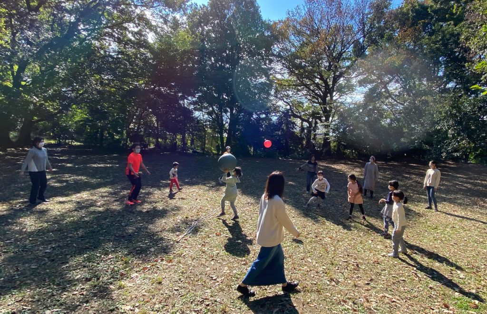
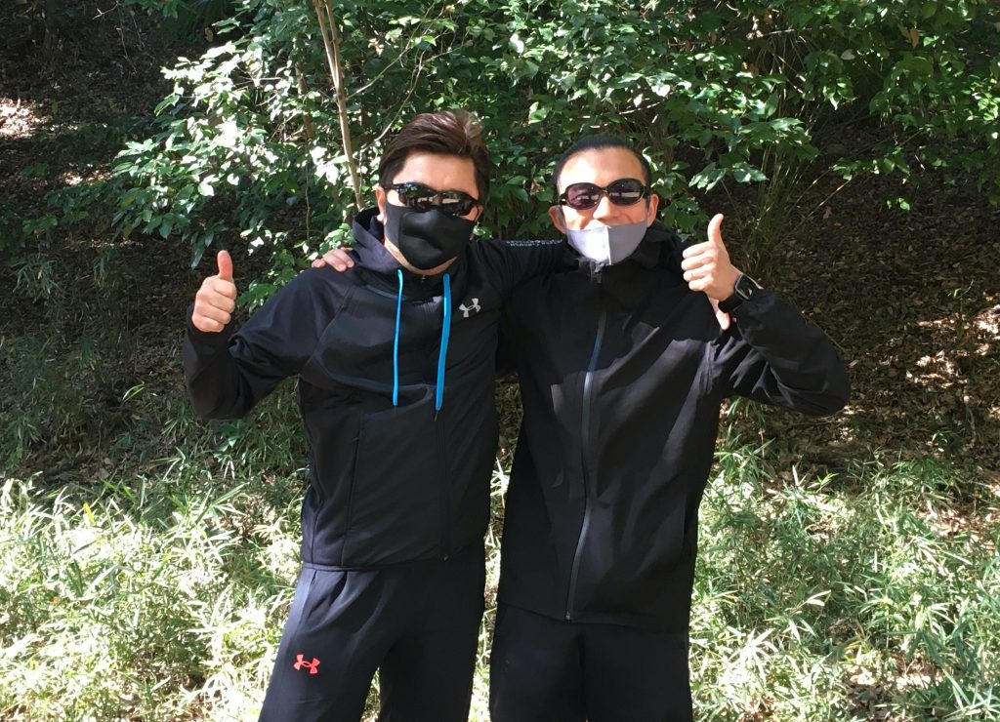
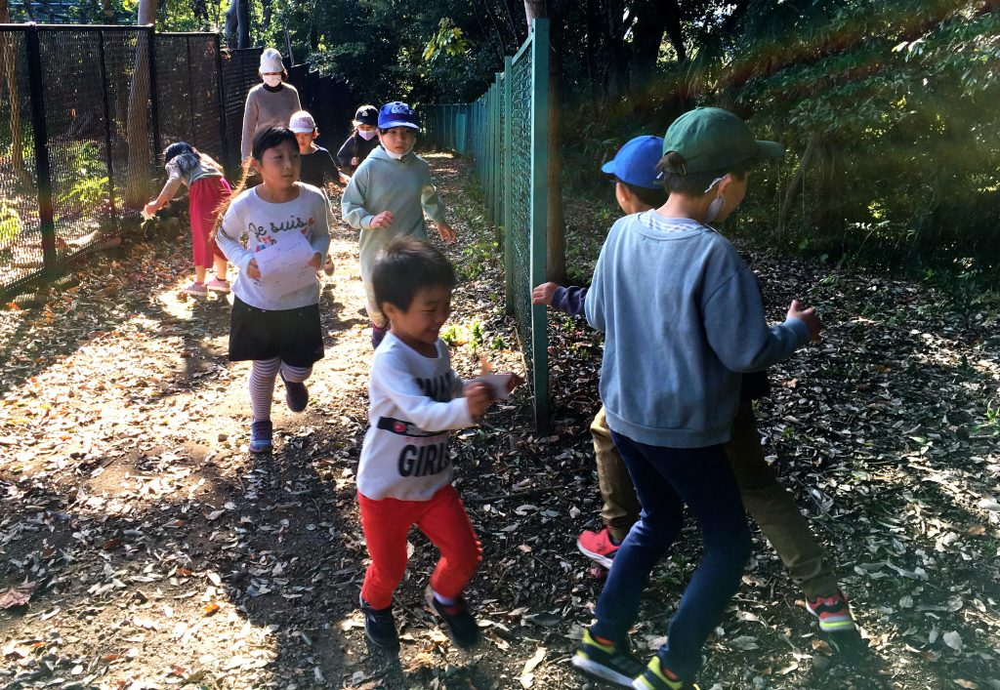

晴天に恵まれた11月14日。
落ち葉いっぱいの秋のカニ山🍁で開催した11月のカニ山会は、ボールをいっぱい使ったドッチボールからスタート！
今回は、大人も全員参加で、「大人 vs 子ども」「男 vs 女」といろいろなチームでドッチボールを楽しみました❗️
四方八方から飛び交う、大中小のボール。
子どもたちの容赦ない攻撃に、追い回される大人たち。
お父さん、お母さんとの本気のドッチボールをめいいっぱい楽しんだ子どもたちのうれしそうな顔が印象的でした ☺️💕


ドッチボールのあとは、お待ちかねの「逃走中」。
カニ山に隠された宝を探す子どもたちを、謎のハンターが追いかけます。


今回も、おもいっきりからだを動かしてあそんだ子どもたち。
次回は、12月12日（日）開催予定。
なにかクリスマスっぽい企画🎅🎄を検討中です！！
参加希望の方はLINEよりご連絡ください ^^